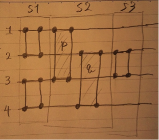

上から入力線を1、2、3とし、ステップをSと表すとすると
S１：1と2のソート
S２：2と3のソート
S３：1と3のソート
S４：1と2のソート
と表せる。
・(S1)により１<２にソートされる。
・(S2)により、２<３にソートされる。この時点で入力線３には、最も大きい値がくることが分かる。
・(S3)により1<3
・(S4)により1<2にソートされる。この時点で１<２であることが確定する。
以上より1<2<3であることは明らかである。
(1)大きさｎのソーティングネットワークの全ての入力の、最も大きい値をラインnに移動させるには、n-1個の比較器があることは明らかである。これはバブルソートと同じ原理である。
(2)次にラインnを除く、大きさn-1のソーティングネットワークの全ての入力の、最も大きい値をラインn-1に移動させるためには、n-2個の比較器が必要。
このとき、ラインnの値 >= ラインn-1 の値となる。
同様の操作をn-1回行うと、
ラインn>=ラインn-1>=ラインn-1>=・・・>=ライン2>=ライン1
となり、昇順にソートされていることが分かる。
比較器の個数は
Σ(k=1 ~ n-1)k = 1/2 n(n-1)
つまりはO(n^2)個となる。
次に大きさn-1のソーティングネットワークについて考えてみると、大きさnのソーティングネットワークから(1)の操作を除いたものであると考えることが出来る。逆に考えれば、大きさnのソーティングネットワークを求めるには、大きさn-1のソーティングネットワークの比較器の個数+n-1個の比較器となることが分かる。
同様に大きさn-1のソーティングネットワークを求めるには、大きさn-2のソーティングネットワークの比較器の個数+n-2個の比較器となることが分かる。
大きさnのソーティングネットワークに必要な比較器の個数をanとすると、
an = an-1 + (n-1)
となり、再帰的に求めることが可能であることが分かる。
(n >= 2 ) ステップ数 = 2n-3
ステップ数が３である大きさ４のソーティングネットワークを以下に示す。

(S1)：１<２、３<４にソートされる。
(S2)
・比較器p
１<３にソートする。
この時点でS1により、1の値が最も小さい値であることが確定する。
・比較器q
２<４にソートする。
この時点でS1により、４には最も大きい値であることが確定する。
(S3)
２<３にソートする。
残りの不確定であった2と3がソートされたことにより、1~4が昇順にソートされることが証明された。